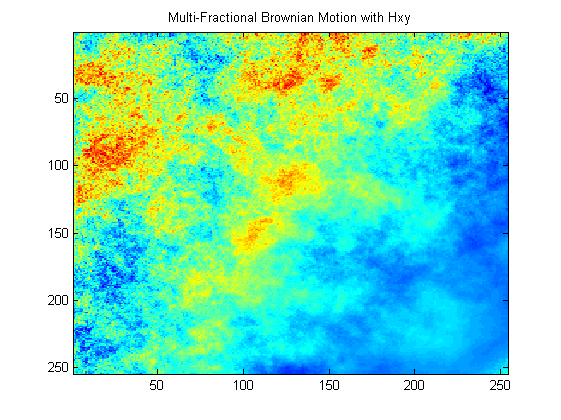
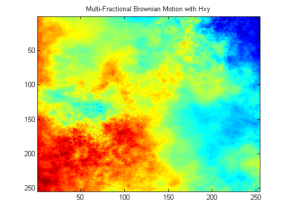

| FRACLAB Functions |
|
Generates a 2D Mutli-fractional Brownian Motion (mBm) using krigging and a prequantification
MBM = mBm2DQuantifKrigeage(N,H,K)
MBM = mBm2DQuantifKrigeage(N,H,K) Generates the multi-fractional brownian motion, MBM, using a sample size, [N,N], a Holder function, H, and a number, K, of levels for the prequantification, with N a positive integer. This allows to model a process the pointwise regularity of which varies in time.
N = 256; x = linspace(0,1,N); y = linspace(0,1,N); [X,Y] = meshgrid(x,y);
f = inline('0.1+0.8*x.*y','x','y'); Hxy = f(X,Y); k = 25;
mbm = mBm2DQuantifKrigeage(N,Hxy,k);
figure; imagesc(mbm); title('Multi-Fractional Brownian Motion with Hxy')

N = 256; x = linspace(0,1,N); y = linspace(0,1,N); [X,Y] = meshgrid(x,y);
f = inline('0.5+0.2*sin(2*pi*x).*cos(3/2*pi*y)','x','y'); Hxy = f(X,Y); k = 25;
mbm = mBm2DQuantifKrigeage(N,Hxy,k);
figure; imagesc(mbm); title('Multi-Fractional Brownian Motion with Hxy')

[1] O. Barrière, "Synthèse et estimation de mouvements Browniens multifractionnaires et autres processus à régularité prescrite. Définition du processus autorégulé multifractionnaire et applications", PhD Thesis (2007).
| |
lepskiiap | mbmlevinson | |